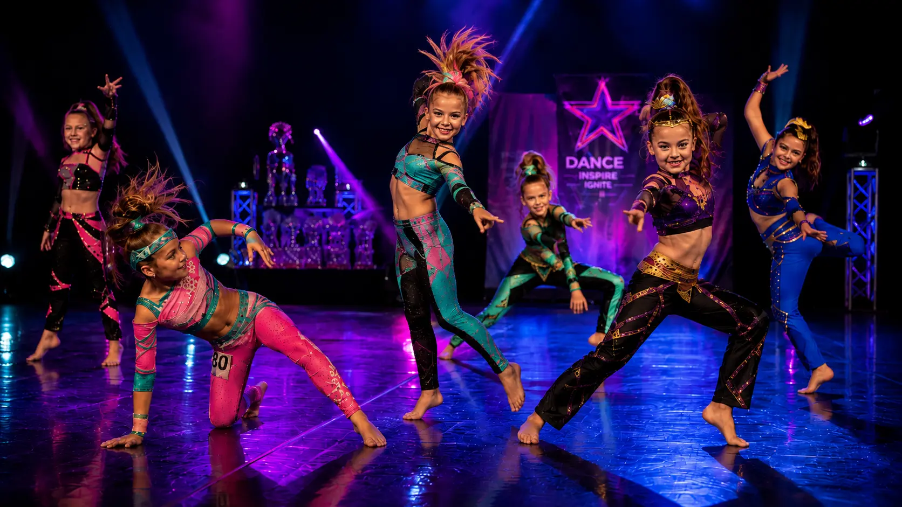

Focení soutěží Dance Nation
Chcete mít ze soutěže kromě zážitku také pořádnou památku z parketu? Nabízím možnost objednat si focení konkrétního sóla nebo dua. Snažím se zachytit výkon, emoce i momenty, které během choreografie často nepostřehnete.
📅 Kdy můžu focení objednat?
Objednávky spouštím po zveřejnění předběžného harmonogramu konkrétní soutěže. Díky němu už vím, které kategorie budu moci během dne fotit.
Objednávání ukončuji 1 den před soutěží ve 12:00. Potřebuji čas objednávky zpracovat a připravit si plán focení na soutěžní den.
📷 Co nabízím?
Z vašeho objednaného sóla nebo dua odevzdám minimálně 10 povedených a upravených fotografií tanečnice / tanečníka nebo dua. Fotografie mohu pořizovat pouze z prostor určených pro diváky.
V minulých letech jsem odevzdal v průměru přibližně 15 fotografií. Deset snímků je garantované minimum.
Hotové fotografie dostanete v plné kvalitě do online alba na DanceNation.zonerama.com .
⏳ Kdy mohu fotografie očekávat?
Hotové fotografie dodám nejpozději do 7 dnů od soutěže. Jakmile budou připravené, obdržíte odkaz na album.
💳 Kolik to stojí?
za jedno sólo nebo jedno duo na konkrétní soutěži.
Nic neplatíte předem. Platbu provedete až po obdržení fotografií.
🖼️ Jaká jsou práva na použití fotografií?
Dodané fotografie jsou určeny pro vaše osobní použití. Můžete je ukládat, tisknout a běžně sdílet; autorská práva k fotografiím zůstávají fotografovi.
Počítejte prosím s tím, že album není soukromé pouze pro vás. K fotografiím mohou mít přístup také ostatní členové Dance Nation.
⚠️ Jaké jsou záruky?
Nemohu stoprocentně zaručit, že se fotografie podaří pořídit. Soutěžní focení ovlivňuje mnoho věcí – pohyb na parketu, světlo, postavení tanečníků, časový průběh soutěže nebo nečekané změny harmonogramu.
Pokud se mi focení nepodaří, samozřejmě nic neplatíte a na následující soutěži budete mít při focení prioritu.
💃 Jaké kategorie v rámci služby fotím?
Objednávková služba je určena pro sóla a dua všech kategorií.
Dostupné kategorie se vždy odvíjejí od harmonogramu konkrétní soutěže. Nemohu zaručit svoji přítomnost po celý soutěžní den, proto přijímám objednávky pouze pro ty kategorie, během kterých budu na místě.
Aktuálně dostupné kategorie vždy uvidíte přímo v objednávkovém formuláři.
🎁 Fotím i něco dalšího?
Ano. Malé skupinky fotím zdarma a během soutěže se snažím zachytit i další momentky, vyhlášení a atmosféru kolem parketu.
Rád udělám také pár fotografií trenérkám, které se o naše děti skvěle starají. A pokud budete chtít společnou fotku s rodinou nebo kamarády, klidně mě na soutěži kdykoliv odchyťte.
Tyto fotografie nejsou součástí placené objednávkové služby. Pokud se vám moje práce líbí, dobrovolný příspěvek samozřejmě potěší.
🔐 Přístup k albům Dance Nation
Přístup do hlavní složky s alby na dancenation.zonerama.com je chráněn heslem. Heslo vám na požádání sdělím. Heslo prosím nesdílejte mimo členy Dance Nation.
🖨️ Chci fotografie také vytisknout
Není problém. Všechny fotografie vám rád připravím také v tištěné podobě. Objednávku tisku můžete jednoduše vytvořit přímo na těchto stránkách.
Ještě něco?
Smyslem služby je hlavně to, abyste si ze soutěží odnesli pěknou vzpomínku a nemuseli během vystoupení řešit focení mobilem. Ze zkušenosti mohu potvrdit, že v průběhu sezóny stačí fotografie ze 2-3 soutěží. Pokud stejnou choreografii fotím opakovaně, nemohu zaručit výrazně jiný výsledek.
Kompletní formální podmínky najdete v podmínkách služby.
Dostupnost focení se může lišit podle konkrétní soutěže a jejího harmonogramu.